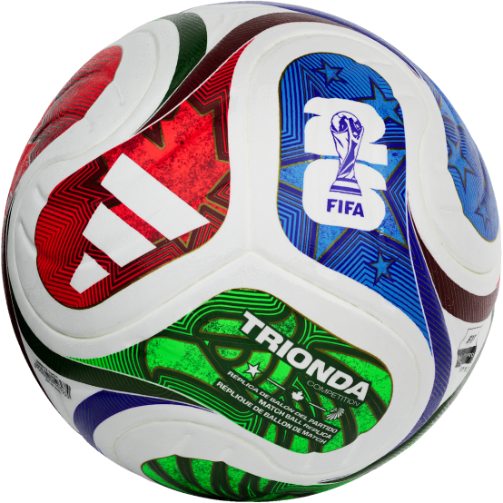

Selecciona un video del acervo y aplica filtros permitidos. (Hoy: UI + prueba funcional con 1 video).
Avance visual: tarjetas con datos (grupo, ranking, partidos, goles) y barra de posesión.
Avance visual: aquí se mostrará sede, ciudad, capacidad y detalles del partido.
Avance visual: preguntas + opciones + progreso. (La lógica se conecta después.)